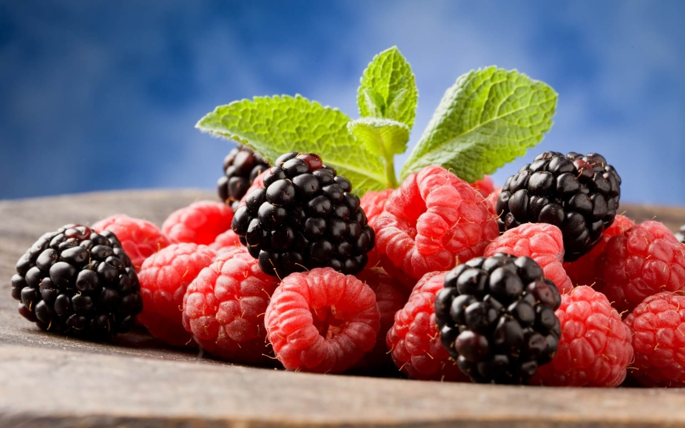

Цікаві факти про малину
Слово малина у нас відразу асоціюється із літом, смачною їжею, лікуванням під час застуди або ж
яскравим малиновим кольором. Малина не тільки смачна та корисна, це ще й надзвичайно особлива
ягода. Ми розповімо вам цікаві факти про дану «вітамінну бомбу» для вашого організму.
У світі налічують понад 200 видів малини. Малина буває чотирьох різних кольорів: червоною,
фіолетовою, золотистою та чорною. Золотиста малина солодша, ніж інші сорти.
До речі, ожина та малина – різні ягоди, хоча доволі часто їх плутають. Різниця
між малиною та ожиною полягає в тому, що малина має порожнє ядро всередині, а ожина – ні.
Найбільш сприятливий клімат для росту малини є у США, близько 90% обсягу проданої
малини у світі займають Вашингтон та Каліфорнія.

Корисні властивості малини
- містить багато клітковини, вітаміну С, калію та фолієвої кислоти;
- має низьку кількість калорій;
- допомагає знизити високий кров’яний тиск;
- має протизапальну властивість.
Малина отримала свою назву від англо-латинського винограду або з распуі, що означає
з німецької “зарості”, тобто грубі ягоди. Археологічні докази показують, що жителі печер періоду
палеоліту вже смакували малиною. Також малина зустрічається в грецькій міфології. У грецьких
оповіданнях ягоди колись були білими, але Іда, коли годувала Зевса, вколола палець колючим
шипом, тому забарвила ягоди кров’ю, через що вони стали блідо-червоними.
Популярність малини в харчових та медичних цілях була і в середні віки, коли її сік також
використовували як червону фарбу в художній роботі.
Ягода малини складається із 86% води, 12% вуглеводів та близько 1% білків та жирів.
Вона є дуже хорошим джерелом міді, біотину, вітаміну Е, магнію, фолієвої кислоти,
омега-3 жирних кислот та калію.
Користь для здоров’я від спожитої малини включає в себе поліпшення роботи травної системи,
посилення імунного захисту, здорове функціонування серця, профілактику раку та полегшення
ендотеліальної дисфункції. Малина сприяє у підвищенні пам’яті, регуляції ваги,
підтримці сильних кісток, догляду за шкірою, поліпшенню зору та нормальному
згортанні крові. Під час вагітності малину обов’язково необхідно споживати
через велику кількість поживних речовин у ній.
Малина містить такі компоненти
Антоціани
Простіше кажучи, це могутня група антиоксидантів. Однією з найбільш важливих
переваг антоціанів є підтримка серцевого ритму, профілактика раку, ожиріння
та поліпшення когнітивної функції організму людини.
Елагідна кислота
Це природна речовина з численними перевагами, найважливішою з яких є профілактика раку.
Кислота може вступати в реакцію з хімічними речовинами, які викликають рак,
що може пригнічувати ріст ракових клітин.
Саліцилова кислота
Кислота чудово підходить для шкіри. Особливо коли справа доходить до боротьби з вуграми
та очищенням шкіри.
Кверцетин
Це рослинний пігмент. Це антиоксидант з протизапальним ефектом і допомагає запобігти таким
захворюванням, як хвороби серця, астма та рак.
ORAC
Це метод вимірювання вмісту антиоксидантів у різних продуктах харчування, також відомий як
здатність радикальної абсорбції кисню. Малина має один з найвищих показників
ORAC – стакан ягід має значення ORAC 6058 мкмоль на 100 г.
Отже, користуючись нагодою, коли літо дарує нам налиті сонцем щедрі плоди, не забуваємо
про малину, яка принесе користь вашому організму, піднімить настрій та подарує ароматно-солодке
задоволення від їжі.
На сьогоднішній день існує неймовірно велика кількість рецептів коктейлів з малиною, соків,
пирогів та тістечок.
Тому споживаймо малину на здоров’я!
Інформацію взято з Цікаво знати
Lesson_4_model